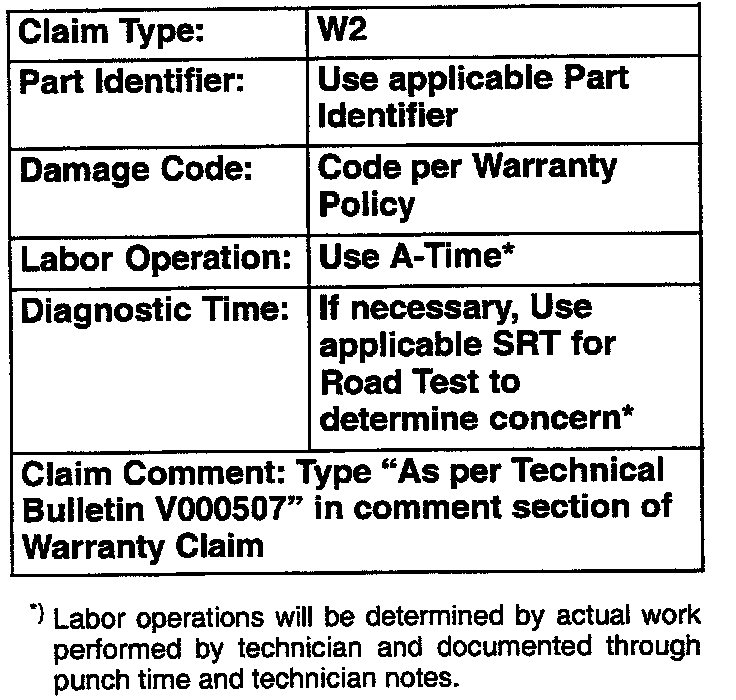

Body/Interior - Squeak and Rattle Kit Availability
Group: 00Number: 05-07
Date: Sept. 14, 2005
Subject:
Squeaks, Rattles and Noise, Repair Kit
Model(s):
ALL
Condition
Various concerns of squeaks, rattles, noise, trim fit conditions etc..
Service

The list shown is of components and applications included in Kit Part No:
W-42SQK.Rattlekit* developed to repair concerns of squeaks, rattles, noise and trim fit conditions.
Tip:
Kit and refills are considered shop supply and cannot be claimed on warranty claim.
To order a complete kit or refills contact the Volkswagen Technical Literature Ordering Center.

When procedure applies to vehicles within the New Vehicle Limited Warranty, use the table shown.